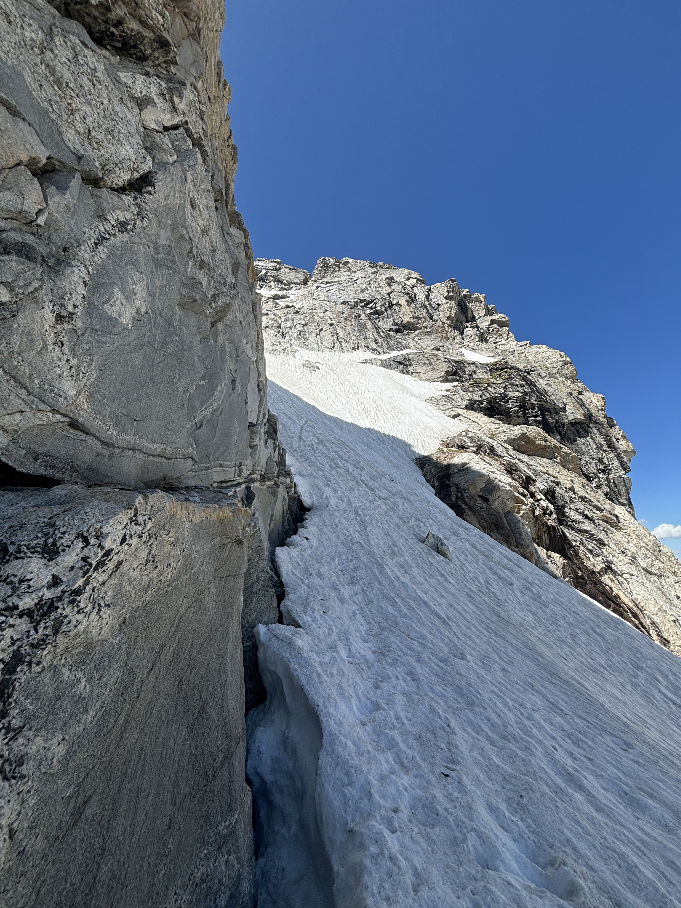
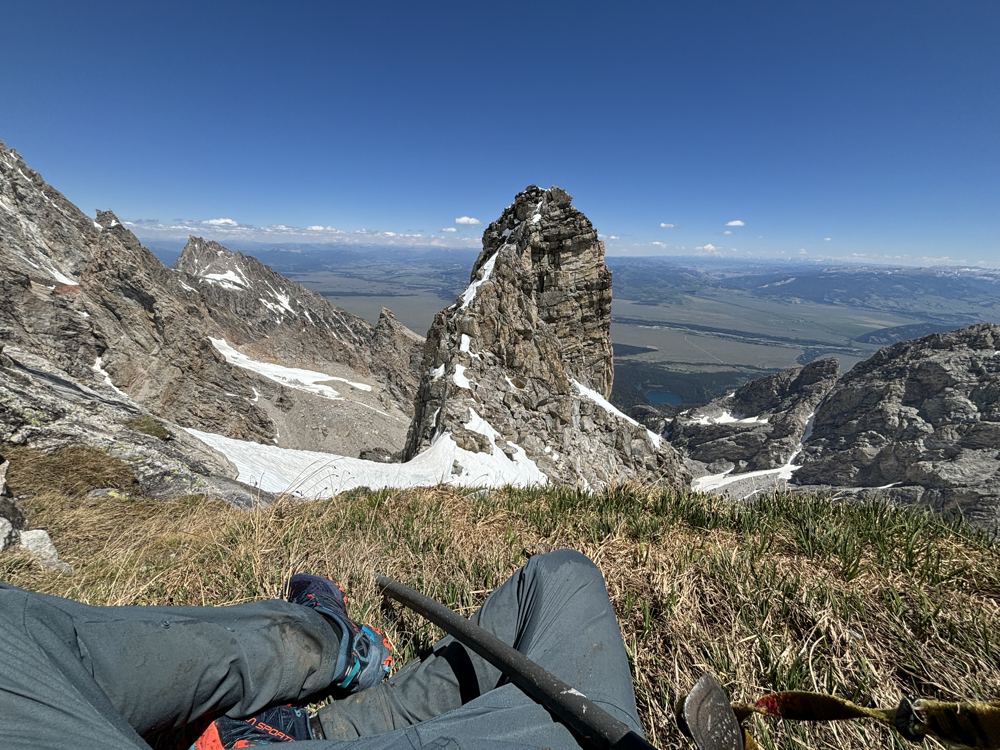
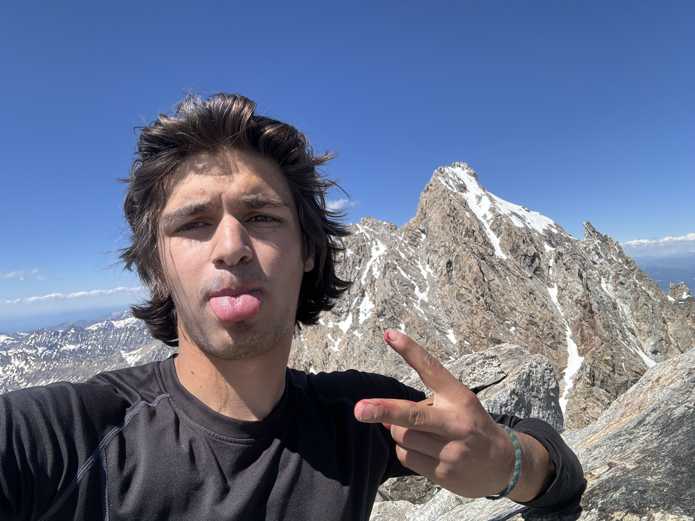

Middle Teton Glacier
6/29/2025


Like half of my new climbs in the Tetons, I went up the glacier route on the Middle after aborting an early ish season try at the Grand. A friend of a friend was in town and we met up intending to run up the Owen Spalding, and maybe more if things went well. We got a proper early start and made it to the upper saddle at a good time – maybe too good, because coupled with excessive ice in the chimneys, the harsh morning wind chill was enough to turn us around. But back in the canyon I was still feeling pretty energetic, so we chose to split and I decided the glacier route on the Middle could be an interesting way to spend the rest of my day.

Starting up the glacier at noon was definitely an advantage. I was in trail runners and would have been fairly hopeless had the snow been any harder. Late June also seemed to be an ideal time to try the route – there was only the major bergschrund at the top of the main flow to avoid, and I could enjoy portions of dry rock climbing on the way up.
I probably spent around two hours on the glacier before my first rock ledge. One issue was that the snow directly above the bergschrund was shaded, and looked like it had been for most of the morning. Traction was less than ideal for a no-slip zone. The angle above the main flow was also uncomfortably steep for not having spikes, though the snow there was easy to kick steps into. In the absence of relaxing terrain I took a high number of ‘assessment’ stops.


The mixed rock/snow section above the Dike Pinnacle notch was theoretically familiar. I’d been fairly lost there the previous August (after climbing to the notch from the south) and hoped that on my second pass I could avoid making the same mistakes. With most of the route snow-covered, however, this was not the case. I was wary of snow-rock transition points and tried to stay as much on one or the other as I could, which led to a few dead-ends and in general a very inefficient route.


A little before 3 pm I made it to the final rock section. My previous time there I was in a rush and used a stretchy traverse to the north that I have to imagine is not the standard way up. This time I tried to look for the correct way, got frustrated, checked my old strava track, and ended up doing the same thing. Wide stance moves around an exposed corner seem unlikely to fit the 5.1 billing in the guidebook. Maybe it is an older grade? I don’t know. The east face of the Middle is one of those places where the book and internet have arrived on anything from 5.0 to 5.5 to describe what I believe is the same route. In any case, after that traverse all that was left was 100-150 feet of scrambling on lower angle rock to pop out around the summit.

Another perk of June is that some of the boulder hopping of descending S. fork Garnet (incidentally: more beautiful, less crowded, and more physically enjoyable than N. fork) was replaced with glissady snow fields. After testing my knees jogging up the Lupine switchbacks in the morning, I took an easier pace on my ride down back to the trailhead.
Estimated stats (strava went wonky): 19 miles, 9k elevation gain.